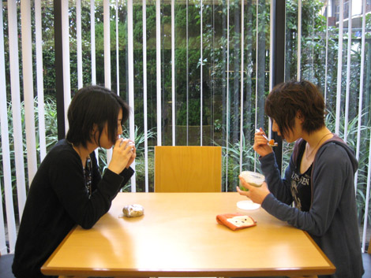

『ランチを食べながらまったり☆ お便り紹介』
2009年02月05日
こんにちは！ マツバラです。
本日は、ヨシノに誘われて
セガの社員食堂に来ています。
ヨシノです。
マツバラが自席で延々と ここ のパノラマビューを見ていたので
ランチに誘ってみました。

セガ社員食堂にて、マツバラとヨシノ
あれ を見てると
自分も『SWA』の世界の住人になったみたいでさ！
キレイだよね。臨場感あるし。
実際のゲームの中じゃ見られないとこまで見られちゃったりするし、
さりげなくお宝コンテンツ。
ソニックきゅんを操作するのとはまた違って
ソニックきゅんのそばにいられる気がするっていうか～……
(こいつ、ソニックしか見てないな)
さて今日は、ランチを食べながらまったりと☆
当ブログに寄せられた皆さまのご意見を
紹介していこうと思います～。
PN.toka さん
「ソニック」といえば、
「難しい」「速すぎてよくわからない」というイメージがあり
ずっとプレイしていませんでした。
でも、友人に進められてWii版SWAをプレイして後悔しました。
こんなアクションゲームがあるんですね！ すごく面白かったです！PN.sol-fa さん
サントラ買おうか迷ってたんですが、ブログ読んでサントラ買うことを決意しました。
パッケージがカッコ良くて・・・3枚組で絵が全部カッコいい！！
ソニックシリーズは毎回音楽がカッコよくて何回聴いても全然飽きませんね。
いまだに「Live&Learn」と「Escape From The City」はお気に入りです。
Wii版SWAや、サントラご購入者の方から
続々と感想メールが！
ありがたや、ありがたや。
喜んで頂けてるの見ると、半端なくテンション上がります。
ちなみにですね……皆さん。こっそりハミだしますと
実は、頂いたメールは
『SWA』ディレクターの橋本さんも見てたりするのです。
『SWA』スタッフ一同にも
ハミだしたりしてます。
当ブログは、皆さまとスタッフの架け橋として！
これからも、頑張るです。
しかし、ブログを読んで購入を決意して頂く方がいるなんて
嬉しいね～。
わーい、わーい。
中には、こんな方もいるんだよ。
ん？
PN.junh さん
Wii版SWAとても面白かったです。
私は発売前にPVを何回見たかもう数え切れませんが、
その期待を裏切らない面白さでした。…面白かったのですが、一通りプレイし終わってPVを改めて見たら
Wii版では全然見たこと無いようなステージばっかりじゃないですか。これは、もう、気になってしまうではないですか。
Xboxと更にHD対応のディスプレイまで買ってしまったじゃないですか。
お金持ち！！
いや、ヨシノ、その反応はどうなのよ！？
HD対応ディスプレイ……解ります。
私も買っちゃいました。だってキレイな画面で楽しみたかったんだもん。
そのおかげで、しばらく極貧生活でした。
いつも「お金ない」って騒いでると思ったら
そんなもの買ってたの……
junh さん、ウニ奢ってください。
たからないの！！
全く、ヨシノは……。
次のご意見にいくよ！
PN.奈々02 さん
私たちは、ソニックファンなんですが、、、
ソニックキャラの絵がうまく描けないんです（泣）ヨシノさん！どうやったらうまく描けますか？？
教えてください！！
えーっとですね、
やっぱりポイントは「愛」でしょうか！
いや、マツバラには聞いてないから。
何さ、小器用に描いちゃって！
逆ギレするな。
私は仕事に飽きたときの落書……じゃない
隙間時間のリフレッシュに
延々とソニックを描いたりしてたので
覚え書きは、あんまり苦労しなかったです。
ヨシノの作業用ノート、
ソニックのラクガキばっかりだもんね……
---
さて、今回はこのへんで！
そうだね、ごはんも食べ終わったし。
しかし、2人でランチ♪ なんて
OLっぽくていいね！
……橋本さん、私たちがブログはじめたとき、
本当はもっと可愛らしくて
優しい雰囲気のブログになると思ってたみたいだよ。
え？
「女子2人でやるブログだから
華のある、癒し系ブログを期待してたのに」って
笑われた。
何を仰いますか！！
私たちのどこに華が無いと！？
ヨシノ、まずいよ！
もっと女子力アピールしなきゃ！！
じゃあ、
女子力アップのために、
帰りに2人でエステでも行く？
今日は帰ってゲームする予定があるから、無理。
いや～、最近また何本か買ったんだけど
プレイするのが追いつかなくてさ♪
でも全部クリアしなきゃって思うと時間が……
(……全然だめだ、こいつ)
日時: 2009年02月05日 20:00 | パーマリンク


 ソニックを愛する、元気な『SWA』2年目プランナー。
ソニックを愛する、元気な『SWA』2年目プランナー。 マイペースな『SWA』2年目プランナー。
マイペースな『SWA』2年目プランナー。
 ご意見・ご要望はこちら
ご意見・ご要望はこちら RSS
RSS